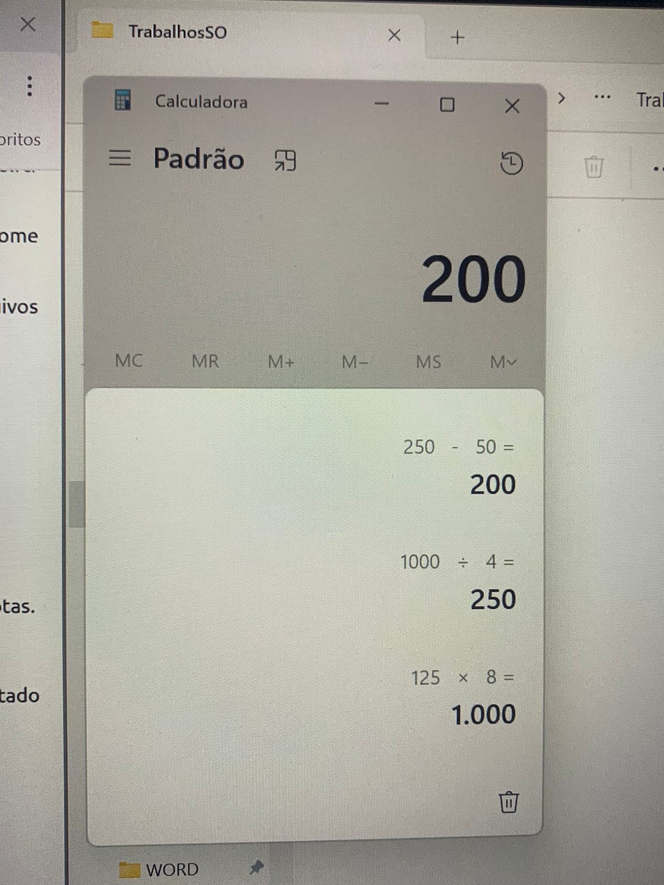
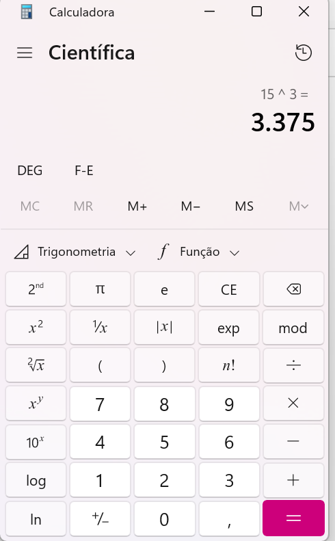
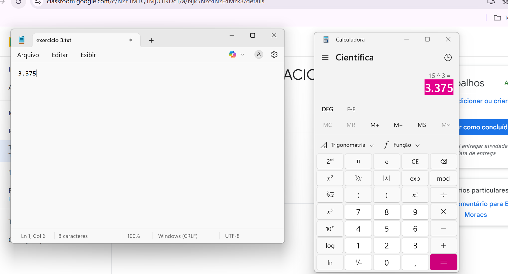

Calculadora
Realize a seguinte operação no modo Padrão: (125 * 8) / 4 - 50 = ?

Mude a Calculadora para o modo Científico. Calcule 153 (15 elevado ao cubo).

Abra o arquivo MeuPrimeiroTexto_v2.docx (do WordPad) ou um novo arquivo no Bloco de Notas.
